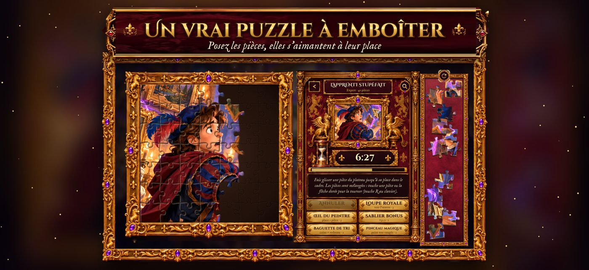
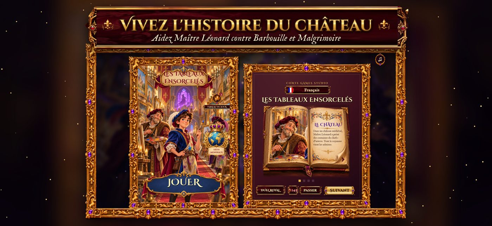

게임 특징
iPhone과 iPad에서 즐기는 광고 없는 무료 퍼즐 게임. 마법의 그림 50개를 완성하고 성을 복원하세요.
- 9~100조각의 퍼즐 50개
- 슬라이딩 퍼즐과 직소 퍼즐
- 성의 갤러리 복구
- 대결과 주간 도전
- 매일 퍼즐과 보상
- 무료·광고 없음

App Store에서 이용 가능
마법의 그림 50개를 완성하며 성을 되살리세요.
App Store에서다운로드Android 버전은 2026년 10월 25일 출시 예정

iPhone과 iPad에서 즐기는 광고 없는 무료 퍼즐 게임. 마법의 그림 50개를 완성하고 성을 복원하세요.